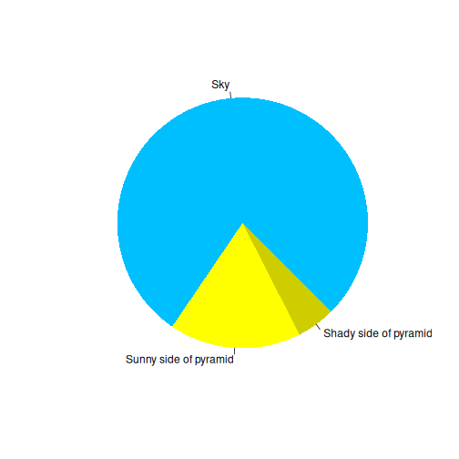

Using RMarkdown
Last updated on 2026-08-20 | Edit this page
Overview
Questions
- How do you write a lesson using R Markdown and sandpaper?
Objectives
- Explain how to use markdown with the new lesson template
- Demonstrate how to include pieces of code, figures, and nested challenge blocks
Introduction
This is a lesson created via The Carpentries Workbench. It is written in Pandoc-flavored Markdown for static files and R Markdown for dynamic files that can render code into output. Please refer to the Introduction to The Carpentries Workbench for full documentation.
What you need to know is that there are three sections required for a valid Carpentries lesson template:
-
questionsare displayed at the beginning of the episode to prime the learner for the content. -
objectivesare the learning objectives for an episode displayed with the questions. -
keypointsare displayed at the end of the episode to reinforce the objectives.
Challenge 1: Can you do it?
What is the output of this command?
R
paste("This", "new", "lesson", "looks", "good")
OUTPUT
[1] "This new lesson looks good"Challenge 2: how do you nest solutions within challenge blocks?
You can add a line with at least three colons and a
solution tag.
Figures
You can also include figures generated from R Markdown:
R
pie(
c(Sky = 78, "Sunny side of pyramid" = 17, "Shady side of pyramid" = 5),
init.angle = 315,
col = c("deepskyblue", "yellow", "yellow3"),
border = FALSE
)

Or you can use standard markdown for static figures with the following syntax:
{alt='alt text for accessibility purposes'}
Callout sections can highlight information.
They are sometimes used to emphasise particularly important points but are also used in some lessons to present “asides”: content that is not central to the narrative of the lesson, e.g. by providing the answer to a commonly-asked question.
Math
One of our episodes contains \(\LaTeX\) equations when describing how to create dynamic reports with {knitr}, so we now use mathjax to describe this:
$\alpha = \dfrac{1}{(1 - \beta)^2}$ becomes: \(\alpha = \dfrac{1}{(1 - \beta)^2}\)
Cool, right?
R
library(epidemics)
uk_pop <- population(
name = "UK population",
contact_matrix = matrix(1),
demography_vector = 67e6,
initial_conditions = matrix(
c(0.9999, 0.0001, 0, 0),
nrow = 1, ncol = 4
)
)
uk_pop
OUTPUT
<population> objectOUTPUT
Population name: OUTPUT
"UK population"OUTPUT
Demography
Dem. grp. 1: 67,000,000 (100%)
Contact matrix
Dem. grp. 1:
Dem. grp. 1: 1
Initial Conditions
[,1] [,2] [,3] [,4]
[1,] 0.9999 1e-04 0 0Widgets
You can also embed self-contained interactive HTML/JS widgets by reading them in and emitting them as raw markup:
step 0 / 0
Here’s another one, for a different worked example:
step 0 / 0
Because these files are pulled in with readLines()
rather than parsed as lesson source, sandpaper’s build cache keys off
this .Rmd file, not the HTML/JS file it reads. If you edit
renewal-slidestyle-widget.html or
cfr-slidestyle-widget.html and the preview doesn’t show
your changes, run sandpaper::reset_site() before rebuilding
to force a full re-render.
- Use
.mdfiles for episodes when you want static content - Use
.Rmdfiles for episodes when you need to generate output - Run
sandpaper::check_lesson()to identify any issues with your lesson - Run
sandpaper::build_lesson()to preview your lesson locally